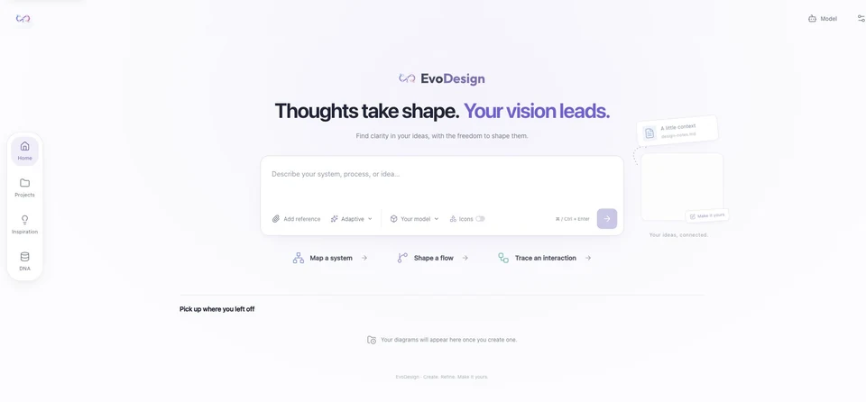

Describe the idea.
Find its shape.
Turn your content into a structured first draft. Review its meaning, then adjust the layout, labels and visual style on the canvas.
Generate & reviewTurn an idea into a diagram.
Keep every detail in your hands.
Describe what you want to explain. Shape the result on an editable canvas, from the first draft to the final detail.
No installationNo API key to tryYours to edit
See how EvoDesign works
MADE FOR YOUR NEXT DIAGRAM
Architecture, sequences, complex flows.
A workspace for the details that matter.
Turn your content into a structured first draft. Review its meaning, then adjust the layout, labels and visual style on the canvas.
Generate & reviewMove nodes, change styles or request a local edit. Add icons when they help. Save, reopen and export your work.
Edit & exportKeep structure, style and layout rules in Your DNA. Choose what to enable, pin useful preferences, and carry them between projects.
Personal design memoryExplore the full local pipeline, step by step.
Source content and your requirements set the intent for the diagram.
Drag the nodes to explore this research illustration. Ready to make your own diagram? Open the online Studio
RESEARCH / REFINEMENT
When a diagram becomes crowded, EvoDesign updates the affected objects in the canvas manifest. Semantic structure can stay intact while spacing, routing, and visual grouping improve.
Software development lifecycle with change control. Artifacts from the manuscript’s refinement case study (Figure 9); shown for qualitative inspection.
Crowded subprocess & return paths
Clearer spacing & visual grouping
AN IDEA IS ENOUGH TO START
Open Studio in your browser and try the shared GLM-5.3-Flash demo. No installation, API key or EvoDesign account needed.
Open Studio Browser guide · 中文说明Prefer your own model? Connect it in Model settings. Projects and design preferences stay in your browser.
Describe a workflow, explain a system, or choose one of the examples in Studio.
Generate an editable draft. Move nodes, refine labels, change styles or ask for an edit.
Export your diagram, return to saved projects and keep useful preferences in Your DNA.
Run locally for the coordinated agents, visual verification and expertise evolution described in the paper.
THE RESEARCH BEHIND THE WORKSPACE
EvoDesign is an agentic framework for editable diagram generation that coordinates structure, style, and layout agents and evolves reusable design expertise.
High-fidelity diagram creation requires coordinated visual-spatial decisions over semantic topology, visual styling, and geometric layout. Existing methods face a representation gap: pixel-based generation offers limited object-level control, while code-based synthesis provides executable structure at the cost of intuitive manipulation. We introduce EvoDesign, an agentic framework for editable diagram creation through an intermediate canvas schema that is both machine-actionable and directly manipulable by users. EvoDesign first constructs a diagram manifest through coordinated structure, style, and layout agents, and then renders the manifest in a diagnostic verification environment. This environment produces objective defect signals and VLM-based critique, enabling localized refinement of the current diagram while also providing evidence for long-term design expertise evolution. The evolution mechanism distills refinement traces into a three-tier design expertise memory, where candidate strategies are linked to the verification evidence that supports them and are promoted into broader guidelines and principles only through repeated cross-context support. We further define CanvasBench, a canvas-recoverable benchmark and evaluation protocol with content, visual, and cognitive dimensions. Experiments across pixel, code-based, agentic, one-shot schema, and canvas-native methods show that EvoDesign provides the strongest overall balance across content fidelity, visual organization, and cognitive usability.
Abstract from the manuscript; project name updated to EvoDesign. Explore the open-source implementation.
INSIDE THE RESEARCH
The framework and the benchmark,
directly from our NeurIPS manuscript.
Coordinated agents build an editable canvas. Verification guides local refinement, and experience becomes reusable design expertise.
 Explore the framework
Explore the framework
Image collection, renderability validation and instruction synthesis lead to CanvasBench and its content, visual and cognitive evaluation protocol.
 Explore CanvasBench
Explore CanvasBench
THE FRAMEWORK
One editable representation connects
generation, refinement, and learning.
Identify entities, relations, groups, and hierarchy from the source content.
Semantic graph GTranslate visual intent into consistent colors, shapes, typography, and emphasis.
Visual encoding SEstimate element sizes, arrange nested groups, and route connections on the canvas.
Spatial configuration LCombine geometric checks with VLM critique to localize defects and repair affected objects.
Verified refinement ↺Refinement traces become reusable knowledge,
with evidence preserved at every level.
Each candidate strategy is linked to the specific findings, edits, and outcomes that support it. Repeated support across compatible contexts promotes strategies into domain guidelines; support across diagram types promotes guidelines into general principles. Retrieval uses agent role, diagram type, and domain, while maintenance prunes, merges, promotes, or demotes memory items.
RESEARCH / THE BENCHMARK
A benchmark built around what
an editable canvas can represent.
Canvas-recoverable diagram–instruction pairs spanning real-world visual topologies. The 5,853-sample training/evolution split supports expertise accumulation; the balanced test split contains 20 samples per diagram type.
Content integrityFidelity · Concept logic · Relevance
Visual presentationAesthetics · Consistency · Flow · Space
Cognitive utilityEase · Accuracy · Self-contained explanation
RESEARCH / REPORTED RESULTS
The manuscript evaluates semantic fidelity, visual organization, and cognitive usability using VLM judges on a five-point scale.
| Method | Representation | Content / 5 | Visual / 5 | Cognitive / 5 |
|---|---|---|---|---|
| GPT-4o-Image | Pixel-based | 2.301 | 3.667 | 3.080 |
| LaTeX TikZ | Code-based | 3.468 | 2.856 | 3.199 |
| DiagramAgent | Agentic | 2.132 | 2.707 | 2.450 |
| SciSketch | Agentic | 3.810 | 2.952 | 3.307 |
| Schema prompting | One-shot schema | 3.687 | 2.482 | 2.752 |
| EvoDesign | Canvas-native | 4.099 | 3.659 | 3.503 |
Dimension means are calculated from the 10 metrics in manuscript Table 1 (3 content, 4 visual, 3 cognitive). The pixel baseline uses GPT-4o-Image and stays fixed across backbone selections. These are manuscript-reported results, not an independent reproduction. See the paper for the evaluation protocol.
Showing GPT-5.5 · 6 methods · 3 dimensions
Download all reported metricsSpace balanceover one-shot schema prompting
Cognitive easeover one-shot schema prompting
GPT-5.5 backbone
Individual metrics on a 1–5 scale
Manuscript Table 1
A FEW THINGS TO KNOW
Getting started, the research,
and what is available today.
Yes. Open the online Studio and start with the shared GLM-5.3-Flash demo, with no EvoDesign account or API key. Shared usage limits apply. You can also connect your own model.
The browser edition offers an editable canvas, selected-object AI edits and locally managed preferences; the paper’s full agent, verification and expertise-evolution pipeline runs in the local edition.
Open StudioEvoDesign uses an intermediate canvas schema with semantic structure, visual style, and spatial layout. The result consists of individual objects that users can move, regroup, and restyle. Specialized agents operate on the same representation to create and locally repair a diagram.
Explore the frameworkCanvasBench evaluates editable diagram generation using 6,273 validated samples across 21 diagram types and 30 content domains. Its 420-sample held-out test set covers content integrity, visual presentation, and cognitive utility through 10 metrics.
See the benchmarkThe comparison reports dimension averages from manuscript Table 1, using VLM judges on a five-point scale. These are not independent reproductions or human preference scores. With GPT-5.5, EvoDesign scores higher on content and cognitive means than the displayed baselines; GPT-4o-Image has a slightly higher visual mean.
Inspect the comparisonThe complete application, diagram engine, personal design memory and evaluation tools are available in the repository. Training and test data will be released separately. This website’s draggable canvas is an illustration. Create diagrams in the online Studio, or run the full research pipeline locally with your own model endpoint.
Explore the codeCITATION
If EvoDesign or CanvasBench informs your research, please cite the paper.
arXiv:2604.09568
@misc{wang2026evodesign,
title = {{EvoDesign}: Agentic Editable Diagram Creation via Design Expertise Evolution},
author = {Wang, Tianfu and Ding, Leilei and Tao, Ziyang and Zhan, Yi and Ma, Zhiyuan and Wu, Wei and Lei, Yuxuan and Wang, Junyang and Wu, Yin and Xu, Yizhao and Zhu, Hongyuan and Liu, Qi and Yuan, Nicholas Jing and Zhang, Yanyong and Xiong, Hui},
year = {2026},
eprint = {2604.09568},
archivePrefix = {arXiv},
primaryClass = {cs.HC},
doi = {10.48550/arXiv.2604.09568},
url = {https://arxiv.org/abs/2604.09568}
}
CONTINUE EXPLORING
Explore the workspace, diagram engine
and your personal design memory.